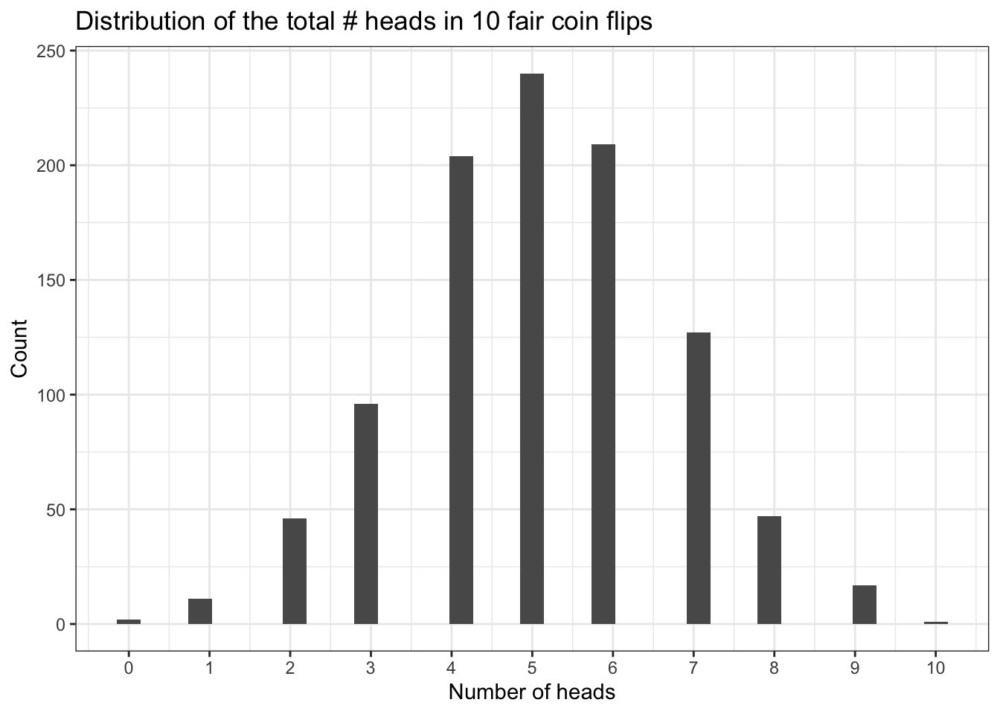

library(tidyverse)
library(tidymodels)
library(fivethirtyeight)Probability I
STA 101
Bulletin
- Lab 04 due Friday October 7
- Regression project due Friday October 14
Today
By the end of today you will…
- be able to define random variables, probability, and distributions
- be able to estimate probabilites from data
- simulate from a binomial distribution
Getting started
Download this application exercise by pasting the code below into your console
download.file("https://sta101-fa22.netlify.app/static/appex/ae12.qmd",
destfile = "ae12.qmd")Load packages and data
data(bob_ross)
glimpse(bob_ross)Rows: 403
Columns: 71
$ episode <chr> "S01E01", "S01E02", "S01E03", "S01E04", "S01E05", "…
$ season <dbl> 1, 1, 1, 1, 1, 1, 1, 1, 1, 1, 1, 1, 1, 2, 2, 2, 2, …
$ episode_num <dbl> 1, 2, 3, 4, 5, 6, 7, 8, 9, 10, 11, 12, 13, 1, 2, 3,…
$ title <chr> "A WALK IN THE WOODS", "MT. MCKINLEY", "EBONY SUNSE…
$ apple_frame <int> 0, 0, 0, 0, 0, 0, 0, 0, 0, 0, 0, 0, 0, 0, 0, 0, 0, …
$ aurora_borealis <int> 0, 0, 0, 0, 0, 0, 0, 0, 0, 0, 0, 0, 0, 0, 0, 0, 0, …
$ barn <int> 0, 0, 0, 0, 0, 0, 0, 0, 0, 0, 0, 0, 0, 0, 0, 0, 0, …
$ beach <int> 0, 0, 0, 0, 0, 0, 0, 0, 1, 0, 0, 0, 0, 0, 0, 0, 0, …
$ boat <int> 0, 0, 0, 0, 0, 0, 0, 0, 0, 0, 0, 0, 0, 0, 0, 0, 0, …
$ bridge <int> 0, 0, 0, 0, 0, 0, 0, 0, 0, 0, 0, 0, 0, 0, 0, 0, 0, …
$ building <int> 0, 0, 0, 0, 0, 0, 0, 0, 0, 0, 0, 0, 0, 0, 0, 0, 0, …
$ bushes <int> 1, 0, 0, 1, 0, 0, 0, 1, 0, 1, 0, 0, 1, 1, 0, 0, 1, …
$ cabin <int> 0, 1, 1, 0, 0, 1, 0, 0, 0, 0, 0, 0, 0, 0, 0, 0, 1, …
$ cactus <int> 0, 0, 0, 0, 0, 0, 0, 0, 0, 0, 0, 0, 0, 0, 0, 0, 0, …
$ circle_frame <int> 0, 0, 0, 0, 0, 0, 0, 0, 0, 0, 0, 0, 0, 0, 0, 0, 0, …
$ cirrus <int> 0, 0, 0, 0, 0, 0, 0, 0, 0, 0, 0, 1, 0, 0, 0, 0, 0, …
$ cliff <int> 0, 0, 0, 0, 0, 0, 0, 0, 0, 0, 0, 0, 0, 0, 0, 0, 0, …
$ clouds <int> 0, 1, 0, 1, 0, 0, 0, 0, 1, 0, 0, 1, 0, 0, 0, 1, 1, …
$ conifer <int> 0, 1, 1, 1, 0, 1, 0, 1, 0, 1, 0, 1, 1, 1, 1, 0, 1, …
$ cumulus <int> 0, 0, 0, 0, 0, 0, 0, 0, 0, 0, 0, 0, 0, 1, 0, 1, 1, …
$ deciduous <int> 1, 0, 0, 0, 1, 0, 1, 0, 0, 1, 1, 0, 1, 1, 0, 1, 1, …
$ diane_andre <int> 0, 0, 0, 0, 0, 0, 0, 0, 0, 0, 0, 0, 0, 0, 0, 0, 0, …
$ dock <int> 0, 0, 0, 0, 0, 0, 0, 0, 0, 0, 0, 0, 0, 0, 0, 0, 0, …
$ double_oval_frame <int> 0, 0, 0, 0, 0, 0, 0, 0, 0, 0, 0, 0, 0, 0, 0, 0, 0, …
$ farm <int> 0, 0, 0, 0, 0, 0, 0, 0, 0, 0, 0, 0, 0, 0, 0, 0, 0, …
$ fence <int> 0, 0, 1, 0, 0, 0, 0, 0, 1, 0, 0, 0, 0, 0, 0, 0, 0, …
$ fire <int> 0, 0, 0, 0, 0, 0, 0, 0, 0, 0, 0, 0, 0, 0, 0, 0, 0, …
$ florida_frame <int> 0, 0, 0, 0, 0, 0, 0, 0, 0, 0, 0, 0, 0, 0, 0, 0, 0, …
$ flowers <int> 0, 0, 0, 0, 0, 0, 0, 0, 0, 0, 0, 0, 0, 0, 0, 0, 0, …
$ fog <int> 0, 0, 0, 0, 0, 0, 0, 0, 0, 0, 0, 0, 0, 0, 0, 0, 0, …
$ framed <int> 0, 0, 0, 0, 0, 0, 0, 0, 0, 0, 0, 0, 0, 0, 0, 0, 0, …
$ grass <int> 1, 0, 0, 0, 0, 0, 0, 0, 0, 0, 0, 0, 1, 1, 0, 0, 0, …
$ guest <int> 0, 0, 0, 0, 0, 0, 0, 0, 0, 0, 0, 0, 0, 0, 0, 0, 0, …
$ half_circle_frame <int> 0, 0, 0, 0, 0, 0, 0, 0, 0, 0, 0, 0, 0, 0, 0, 0, 0, …
$ half_oval_frame <int> 0, 0, 0, 0, 0, 0, 0, 0, 0, 0, 0, 0, 0, 0, 0, 0, 0, …
$ hills <int> 0, 0, 0, 0, 0, 0, 0, 0, 0, 0, 0, 0, 0, 0, 0, 0, 0, …
$ lake <int> 0, 0, 0, 1, 0, 1, 1, 1, 0, 1, 1, 1, 0, 1, 1, 0, 1, …
$ lakes <int> 0, 0, 0, 0, 0, 0, 0, 0, 0, 0, 0, 0, 0, 0, 0, 0, 0, …
$ lighthouse <int> 0, 0, 0, 0, 0, 0, 0, 0, 0, 0, 0, 0, 0, 0, 0, 0, 0, …
$ mill <int> 0, 0, 0, 0, 0, 0, 0, 0, 0, 0, 0, 0, 0, 0, 0, 0, 0, …
$ moon <int> 0, 0, 0, 0, 0, 1, 0, 0, 0, 0, 0, 0, 0, 0, 0, 0, 0, …
$ mountain <int> 0, 1, 1, 1, 0, 1, 1, 1, 0, 1, 0, 1, 1, 1, 0, 0, 1, …
$ mountains <int> 0, 0, 1, 0, 0, 1, 1, 1, 0, 0, 0, 1, 0, 0, 0, 0, 1, …
$ night <int> 0, 0, 0, 0, 0, 1, 0, 0, 0, 0, 0, 0, 0, 0, 0, 0, 0, …
$ ocean <int> 0, 0, 0, 0, 0, 0, 0, 0, 1, 0, 0, 0, 0, 0, 0, 1, 0, …
$ oval_frame <int> 0, 0, 0, 0, 0, 0, 0, 0, 0, 0, 0, 0, 0, 0, 0, 0, 0, …
$ palm_trees <int> 0, 0, 0, 0, 0, 0, 0, 0, 0, 0, 0, 0, 0, 0, 0, 0, 0, …
$ path <int> 0, 0, 0, 0, 0, 0, 0, 0, 0, 0, 0, 0, 0, 0, 0, 0, 0, …
$ person <int> 0, 0, 0, 0, 0, 0, 0, 0, 0, 0, 0, 0, 0, 0, 0, 0, 0, …
$ portrait <int> 0, 0, 0, 0, 0, 0, 0, 0, 0, 0, 0, 0, 0, 0, 0, 0, 0, …
$ rectangle_3d_frame <int> 0, 0, 0, 0, 0, 0, 0, 0, 0, 0, 0, 0, 0, 0, 0, 0, 0, …
$ rectangular_frame <int> 0, 0, 0, 0, 0, 0, 0, 0, 0, 0, 0, 0, 0, 0, 0, 0, 0, …
$ river <int> 1, 0, 0, 0, 1, 0, 0, 0, 0, 0, 0, 0, 0, 0, 0, 0, 0, …
$ rocks <int> 0, 0, 0, 0, 1, 0, 0, 0, 0, 0, 0, 0, 0, 0, 0, 0, 0, …
$ seashell_frame <int> 0, 0, 0, 0, 0, 0, 0, 0, 0, 0, 0, 0, 0, 0, 0, 0, 0, …
$ snow <int> 0, 1, 0, 0, 0, 1, 0, 0, 0, 0, 0, 0, 0, 0, 1, 0, 1, …
$ snowy_mountain <int> 0, 1, 0, 1, 0, 1, 1, 0, 0, 0, 0, 1, 1, 1, 0, 0, 1, …
$ split_frame <int> 0, 0, 0, 0, 0, 0, 0, 0, 0, 0, 0, 0, 0, 0, 0, 0, 0, …
$ steve_ross <int> 0, 0, 0, 0, 0, 0, 0, 0, 0, 0, 0, 0, 0, 0, 0, 0, 0, …
$ structure <int> 0, 0, 1, 0, 0, 1, 0, 0, 0, 0, 0, 0, 0, 0, 0, 0, 1, …
$ sun <int> 0, 0, 1, 0, 0, 0, 0, 0, 0, 0, 0, 0, 0, 0, 1, 1, 0, …
$ tomb_frame <int> 0, 0, 0, 0, 0, 0, 0, 0, 0, 0, 0, 0, 0, 0, 0, 0, 0, …
$ tree <int> 1, 1, 1, 1, 1, 1, 1, 1, 0, 1, 1, 1, 1, 1, 1, 1, 1, …
$ trees <int> 1, 1, 1, 1, 1, 1, 1, 1, 0, 1, 1, 1, 1, 1, 1, 1, 1, …
$ triple_frame <int> 0, 0, 0, 0, 0, 0, 0, 0, 0, 0, 0, 0, 0, 0, 0, 0, 0, …
$ waterfall <int> 0, 0, 0, 0, 0, 0, 0, 0, 0, 0, 0, 0, 0, 0, 0, 0, 0, …
$ waves <int> 0, 0, 0, 0, 0, 0, 0, 0, 0, 0, 0, 0, 0, 0, 0, 1, 0, …
$ windmill <int> 0, 0, 0, 0, 0, 0, 0, 0, 0, 0, 0, 0, 0, 0, 0, 0, 0, …
$ window_frame <int> 0, 0, 0, 0, 0, 0, 0, 0, 0, 0, 0, 0, 0, 0, 0, 0, 0, …
$ winter <int> 0, 1, 1, 0, 0, 1, 0, 0, 0, 0, 0, 0, 0, 0, 0, 0, 0, …
$ wood_framed <int> 0, 0, 0, 0, 0, 0, 0, 0, 0, 0, 0, 0, 0, 0, 0, 0, 0, …Re-cap from prepare
Warm-up
There are 403 episodes of Bob Ross. Assume exactly 1 painting is painted in each episode. Pretend that before each episode, Bob Ross flips a coin to decide whether or not to paint a sunrise. If it lands heads, a sunrise is in the painting and if it’s tails then he does not paint a sunrise. Let \(X\) be the number of episodes a sunrise is featured in the painting. What is the sample space of this random experiment?
What is an event?
Let A be the event \(X>10\) and let B be the event \(X<3\). Are A and B disjoint?
Probability
A probability is the long-run frequency of an event. In other words, the proportion of times we would see an event occur if we could repeat an experiment an infinite number of times. Probabilities take values between 0 and 1 inclusive.
Note
If A and B are two disjoint events, then the probability of A or B occurring is equal to the probability of A plus the probability of B. More concisely, Pr(A or B) = Pr(A) + Pr(B).
More definitions
Let A and B be two events.
- Marginal probability: The probability an event occurs regardless of values of the other event
- P(A)
- Example: What’s the probability that, in a randomly selected episode of Bob Ross, the painting features clouds?
- Joint probability: The probability two or more events simultaneously occur
- Example: What’s the probability that, in a randomly selected episode of Bob Ross, the painting features clouds and mountains?
- P(A and B)
- Conditional probability: The probability an event occurs given the other has occurred
- P(A|B) or P(B|A)
- Example: What is the probability that a Bob Ross painting features clouds if it was randomly selected from season 1?
- P(A|B) = P(A and B) / P(B)
- Independent events: Knowing one event has occurred does not lead to any change in the probability we assign to another event.
- P(A|B) = P(A) or P(B|A) = P(B)
- Example: The probability a painting features lakes is independent of whether or not it features rivers. More concisely, P(lakes | rivers) = P(lakes)
Exercise 1
Approximate the probability of each example above using the bob_ross data set. For the last example (independence) validate or refute the claim using the data set.
# code hereData generative processes
As statisticians, we often want to model the process that generates data. For example, although Bob Ross probably does not flip a coin to decide what to paint, it might be a useful model for describing the data.
To formalize this concept, we will embrace two new concepts: random variables and distributions.
Random variables
You may not have realized it, but we’ve already seen random variables. A random variable is a function that maps an observed outcome to a number.
For example, when Bob Ross paints a tree and we label it “1” or does not paint a tree and we label it “0”, we are defining a random variable!
Note
Random variables that only take the values 0 and 1 have a special name. They are called indicator random variables because they are thought of as indicating whether or not an event occurs.
Random variables have distributions…
Distributions
Binomial distribution
The binomial distribution models the number of success in a series of independent and identical binary trials and is defined by two parameters:
- \(k\), the total number of trials,
- \(p\), the probability of a success in an individual trial.
The sample space of a binomial random variable is \(\{0, 1, \ldots, k \}\). In words, there could be up to \(k\) success in an binomial experiment.
Example
You toss a fair coin 10 times. Let A be the event there is at least one head. What is the probability of A?
Here \(k\) is _ and \(p\) is _.
rbinom() arguments:
- size is the number of trials, aka the number of coin flips in 1 experiment
- prob is the probability of a success
- n defines how many times to repeat the entire experiment
set.seed(100) # sets random seed to ensure we get same result
N = 1000 # total number of experiments of 10 coin flips
coin_flips = data.frame(num_heads = rbinom(n = N, size = 10, prob = 0.5))
coin_flips %>%
filter(num_heads >=1) %>%
nrow() / N[1] 0.998coin_flips %>%
ggplot(aes(x = num_heads)) +
geom_histogram(bins = 35) +
theme_bw() +
labs(x = "Number of heads",
y = "Count",
title = "Distribution of the total # heads in 10 fair coin flips") +
scale_x_continuous(breaks = 0:10)
Exercise 2
Suppose Bob Ross paintings feature a mountain with probability \(0.7\). (You might imagine that before Bob Ross paints, he flips an unfair coin that has a 70% chance of landing heads. If the coin lands on heads, he paints a mountain if it lands on tails he does not.) Given that there are 403 episodes of Bob Ross, what is the probability that at least 150 paintings feature a mountain?
To help you setup your simulation, set \(N = 2000\). What is \(k\)? What is \(p\)?
To ensure we get the same answer, use the seed provided below.
set.seed(100)
# code here- As a follow-up question, what is the probability that at least 100 paintings but not more than 200 feature a
mountain?
Mathematics of the binomial distribution
\[ X \sim \text{Binomial}(k, p) \]
“X has a binomial distribution with parameters k and p”
What this means to us is:
we can simulate the distribution of X using the
rbinomcode from abovewe can compute the probability X equals any specific value explicitly with the equation below
\[ P(X = m) = {k \choose m} (p)^{m}(1-p)^{k-m} \] If we want to know, for example, the exact probability Bob Ross paints at least 150 paintings with a mountain, we would need to add up \(P(X = 150) + P(X = 151) + P(X = 152) + \ldots + P(X = 402) + P(X = 403)\).
Example
What’s the probability that exactly 1 coin lands heads when we flip a fair coin 10 times?
# P(X = m)
# k choose m
# k = 10, m = 1
# fair coin means p = 0.5
choose(10, 1) * (0.5)^1 * (1 - 0.5)^(10 - 1)[1] 0.009765625Exercise 3
What’s the probability at least 1 coin lands heads? Use the equation above to compute. Hint: \(P(X >= 1) = 1 - P(X = 0)\).
# code hereExercise 4 (before next class)
Play with the “random variables” lesson here. Describe what you observe.